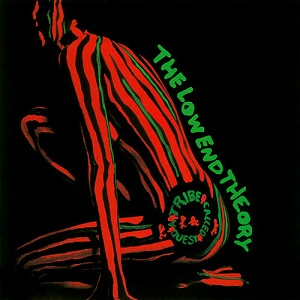
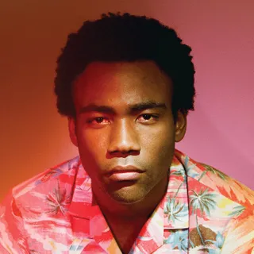

Melodramaby Lorde dissects the feelings of growing up and longing for pieces of your life that no longer exist.
Click here for a ranking of my top ten personal albums. These records are fundamental in defining my music taste and they provide the soundtrack for my life.
DISCLAIMER: These are the top ten albums that have impacted my music taste and that have been in my rotation for years. They’re what I find to be ‘no skips’ from start to finish, which is a difficult feat to achieve.
I understand that in terms of production, lyricism, and delivery that these are not the top ten albums ever made. .
French Exit by TV girl explores the different emotions of young love
MELODRAMA
In her sophomore album Melodrama, Lorde uses a painted portrait of herself in bed for the cover art of an album full of nostalgic synths and 808 beats. Lorde shares the stories of our deepest secrets and fondest memories by situating herself in a place that we know all too well- our beds at night. A contrasting of soft light on her face and a darker bed space represents a soft glow of happiness that's found in our memories and experiences. These thoughts that come to us in our most emotional times, feelings of youthful love and the love of being alive. The darker blues appearing on the wall and the sheets represent countless sleepless nights and feelings associated with loss and heartbreak. Melodrama's cover art expresses our most vulnerable moments. Our bedtime thoughts and midnight fantasies dance around the room with us in colorful displays of affection, uniting us all in the name of truly being alive.
FRENCH EXIT
The cover art for French Exit by TV Girl beautifully exemplifies lovers capturing the exact feeling of young love. The clear portrayal of love and comfort that you feel in a lover's arms is dramaticized by the woman pictured right's joyous expression, despite a more ominous dark background. Feelings closely associated with falling in love topples the mood and sets a tone for the album that picks at hearts of the masses. The contrast between the darkness and the couple hugging represents phrases like "you are the light of my life" which is synonymous with the feelings of falling deeply in love with someone. Cover art provides a lens that allows listeners to better understand the lyrics and meaning behind the songs. These tracks represent the various stages of beginning to love someone. The infatuation, the confusion, the obsession, the love, the denial, the guilt, the overwhelming culmination of feelings that are sometimes too special to put into words. French Exit's exemplification of love and warmth reflect in the albums use of strings and melodic kick-drum sequences.
SWIMMING
Mac Miller's album Swimming is full of rhythmic jazz-influenced beats and melodic synths that bring an ethereal sense of emotion to listeners. However, careful analysis of the album art expresses a much darker tone. For much of his career, Mac fell victim to substance abuse issues that left him with feeling of emptiness on top of a wildly successful career. Miller is pictured sitting in a pink suit with defeated posture and facial expressions. Although no direct conclusions can be made to his bare feet, we may assume that it may follow the representation of death in art (Moyer, 2019). With such a tone in mind, analysis of the cover art to be a reflection of Mac's mental state. Mac's bright pink suit distracts audiences from his exhausted posture, signaling that how he masks many of his deepest personal issues with a bubbly personality and upbeat songs. The most chilling of realizations, however, is understood in the frame of what Mac is sitting inside. Dark and ominous themes of death and struggle help audiences draw a comparison between this small doorway where he slumps to be representative of a coffin.
TO PIMP A BUTTERFLY
Kendrick Lamar is no stranger to powerful and striking messages. His attitudes, lyrics, art, and morals all reflect his rejection of political and judicial systems that historically disadvantage Black and poor people in America. Kendrick, surrounded by his acquaintances in front of the White House, joyously celebrate over a dead, white judge. The flaunting of money, jewelry, and the presence of qualities often attributed with "poor" or "hood" individuals exclaims Kendrick's pride in his upbringings and roots in Compton. Positioning themselves in front of the White House (a symbolic representation of the United States political systems), they embrace their identities and reclaim their definition of freedom, freed from the shackles of political and judicial abuse. Kendrick shares his connection with
Black Panther: The Album. Releasing just a week before Marvel’s major blockbuster production, Black Panther in February of 2018, Kendrick Lamar released Black Panther: The Album. With help from big names in the industry like SZA, ScHoolboy Q, Khalid, Swae Lee, Travis Scott, The Weeknd, and more, Kendrick undoubtedly delivered one of the most versatile hip-hop projects of the decade. Collaboration of almost exclusively Black artists takes this album to new heights, just as the film did. Both Black Panther the film and album establish themselves as benchmarks of Black excellence in the entertainment industry, showing the power that this community holds despite a history of systemic oppression. Moving into the music, groovy and upbeat highlights of the album include All The Stars, The Ways, King’s Dead, Big Shot, and Pray For Me. Tracks like Black Panther, X, I Am, and Redemption provides a more melodic and narrative presence strengthening the tie between the album and the film. What I admire so much about this album is Kendrick’s promise to involve authentic African instruments, artists, and music styles.

The Low-End Theory by A Tribe Called Quest is one of those albums that everyone should at least know about if they haven’t listened to it already. This album serves as a foundation of hip-hop in its early stages of evolution beyond the explosion of the genre over the decade of the 80s. Tribe themselves solidify themselves as kings of the ‘boom bap’ era through their extensive catalog of hits released throughout the early 90s, and this album is possibly the best example of the power that they held on the game. I personally love this album because of its historic impact on the genre of hip-hop and its ability to stay true to the genre while simultaneously pushing the limits of what hip-hop and rap can sound like.
Because The Internet. Childish Gambino has always been an artist to showcase a sort of avant-garde style in his music and associated visuals. At the time, Because The Internet was the largest testament to his style. Gambino shares his reflection on how social media and the new digital age affect social interactions and our relationships. Unlike some other projects on this list, my affection for this album doesn’t just come from a place of respect for originality and art production. It’s catchy lyrics and infectious beats bring the album to new levels. Tracks like “3005”, “I. The Worst Guys”, “IV. Sweatpants”, and “I. Pink Toes” are still heavily streamed today and prove how this album fits into the hip-hop/rap scene of the last decade.

Man on The Moon: The End of Day. Kid Cudi is one of those artists that’s been in my rotation since I started listening to music. Man on the Moon: End of the Day brought us tracks like “Soundtrack 2 My Life”, “Pursuit of Happiness”, “Day ‘N’ Nite”, and “Enter Galactic” which collectively provide a nostalgic sound for the time period of the early 2010s. This album falls at number two on my list because of its replay-ability, versatility, and emotion-provoking nature. As you listen, it’s like a rollercoaster of excitement, nerves, pain, sorrow, and happiness as you roll from track to track.
good kidd m.A.Ad City. I think that most modern-day rap fans agree with having good kid, m.A.A.d city in their top five rankings. Despite releasing in 2012, this project from Kendrick Lamar provides countless hits that have cycled their way through the charts in recent years. Lamar’s ability to provide a cohesive narrative storyline in his albums is a testament to his artistry and ability to create masterpieces. Both lyric-wise and production-wise, this album takes the crown any day. You could listen to the album three times in a row and swill find new meanings in the lyrics each time you listen, which Is a main reason on why I think it deserves the #1 spot.
Resist the "Pimp"
This hip-hop album has contributed to aspects of my identity that help define who I am and who I stand for. Upon the album's release, I only knew a select few songs, those songs being “King Kunta”, “Alright”, “i” and “The Blacker The Berry”. As I moved through high school this album greatly developed my taste in hip-hop music and my involvement in socio-political movements like Black Lives Matter. "Alright" was used as a universal anthem, uniting people from all walks of life as this movement progressed.
As time goes on, this album becomes increasingly important to me, my learning, and my morals.
What I’d like to examine is how Kendrick’s To Pimp A Butterfly became so popular and was so effective in connecting with audiences. What did people value about music? How did this music fit into these people’s lives? What values does Kendrick possess that made this album as successful as it is? What is it about this album that allowed Kendrick to capture the Black experience that millions face so well? Aside from being extremely well produced with catchy upbeat choruses, I think there is a much deeper meaning behind the success and implementation of this album in listeners' lives. From representation to empowerment, I’d like to analyze how this album reached audiences through rhetoric.
A massive element of developing his fanbase and how they resonate with his music is Kendrick’s credibility. Kendrick sat down in an interview with MTV, and closely dissected the album track by track, revealing to the interviewer and audiences what the inspirations and goals of every song were. In this interview with MTV, Kendrick says the album's goal is to highlight the “pimping” of successful, unique, Black men in this country, and the importance of resisting this ideology. Kendrick Lamar says, “It represents using my celebrity for good and... not being pimped by the industry” (MTV). Being “pimped” is having your success or values exploited and glorified in the media without your own attempt at making this happen. Kendrick touches on this “pimping” throughout the album and shows how it's a collective struggle for the Black community. He informs us that although he’s become an international sensation, he’s still connected and representative of his Black roots and urban struggles. Fans value Kendrick’s work because he refuses to fall victim to pimping. His music is successful because fans appreciate the sense of ‘realness’ that he brings to the table. I think that this "pimping" that appears across the album is exactly what made listeners deeply resonate with not just the album but Kendrick's morals as well.
A large aspect of Kendrick’s career has been ignored by the mainstream media, but it's something that he highlights on this album. This “pimping” has made him into the sensation he is today, however, he wants to reinstate ties with the Black community and provide empowerment for them by suggesting that this “pimping” was not done through his intentions. Something that fans value in Kendrick’s music is his resistibility to ‘selling out’ to the industry. Despite being surrounded by drugs, fame, money, and other materialistic things, his music is still representative of Black struggles, and that’s something that fans appreciate. Having the ability to resist the industry in such an outward way on this album is what I think helped Kendrick connect with audiences and be a part of things like the Black Lives Matter movement with "Alright".
Starting with the first song on this album, "Wesley's Theory", Kendrick speaks to MTV about his experience resisting the “pimping” through the lyrics that promote bringing your friends up so they can cherish your success with you, instead of leaving them in unfortunate situations. He reinforces his resistibility towards pimping on “King Kunta” where he raps about his integrity and taking pride in his past experiences. The "pimping" continues on tracks like "u" and "The Blacker The Berry" where Kendrick raps about how those he's grown up with and loved for so many years see his through the media. These people see him as a completely different version of himself, but Kendrick wants to emphasize his ability to resist the media portrayal of himself and show that he still is very much connected to Compton.
Being able to sit down and analyze this album has been an extremely important factor for me in realizing the issues that lie within United States political-economic practices. As Kendrick connects with his audience through authenticity and pride, he describes “pimping” as an evil that plagues successful Black men, nationwide. The album isn’t only a musical masterpiece, it’s a learning experience. Understanding the issues that exist with racial boundaries and success in the United States sparks my interest in learning about the policies and other factors that contribute to things like “pimping”. After hearing Kendrick’s own thoughts on the making of To Pimp A Butterfly, I want to dissect more of his work, now that I can see the time, consideration, and lessons that are implemented within them. From my first experience to my current experience with this album, I realize that it continues to affect me and morals regarding subjects in American culture. Understanding “pimping” and how it effects Black Americans is an essential part in understanding who Kendrick Lamar is, and what his music stands for.